1.16M
Road traffic deaths annually
Approximate global annual toll.
WHO · Road safetyHow does visual attention before crossing initiation relate to pedestrian safety?
Using VR experiments and eye tracking with 97 participants, this study examines visual attention before pedestrian crossing initiation.
Visual reorganization begins approximately 6.25 seconds before the first step. Larger crossing safety margins are associated with greater relative attention to vehicles, less attention to roadside objects and the crosswalk, and less frequent visual switching.
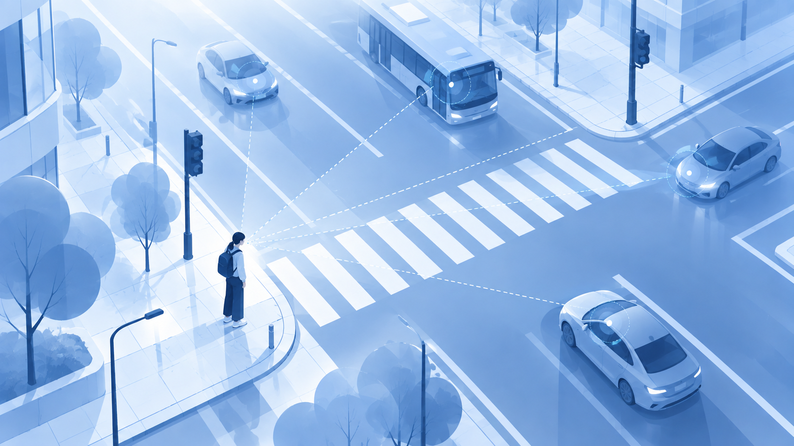
The results indicate that attentional resource allocation, the timing of vehicle information entering visual processing, and the organization of visual search before movement initiation are associated with subsequent crossing safety margins. When these visual processes are considered together, attentional allocation and overall visual switching patterns show more stable independent associations.
Understanding pedestrian safety begins before movement begins.
Approximate global annual toll.
WHO · Road safetyShare of all road traffic fatalities.
WHO · Global status report 2023Share of all road traffic fatalities.
WHO · Global status report 2023 (2021 data)Public context data, separate from this study. The annual death estimate (1.16 million) follows the WHO road safety overview. Vulnerable road users (>50%; reported as 53%) and pedestrians (23%) follow the WHO Global status report on road safety 2023, based on 2021 data. These sources use different reporting periods; the 2023 report estimates 1.19 million total deaths in 2021.
FROM REAL-WORLD RISK TO THE RESEARCH QUESTION
THE REAL-WORLD CHALLENGE
TRADITIONAL FOCUS
THIS STUDY ASKS ONE STEP EARLIER
How does visual attention gradually become organized?
This controlled VR pedestrian crossing study collected eye tracking, traffic states, and crossing behavior under different vehicle speeds and initial distances to examine how visual processes before movement initiation relate to subsequent crossing safety margins.
The study sample
All participants completed the VR crossing task with eye tracking.
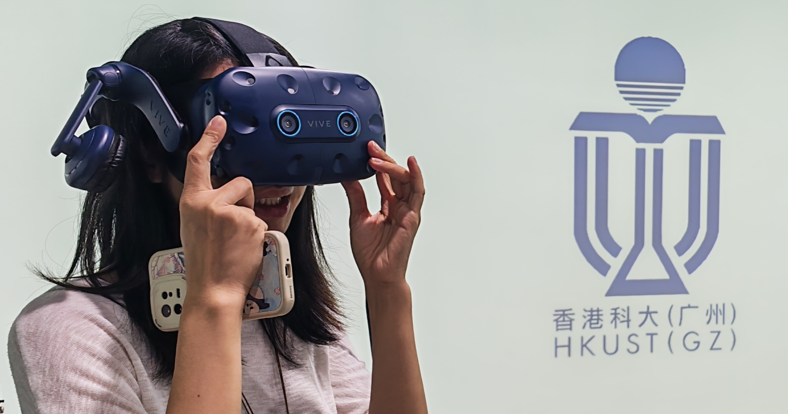
The equipment and the street participants experienced
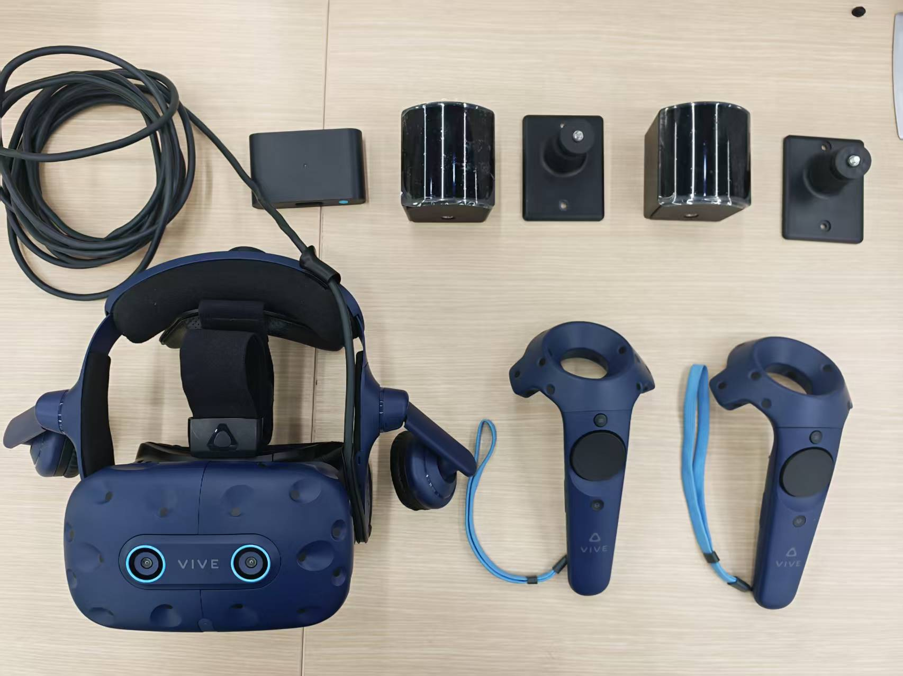
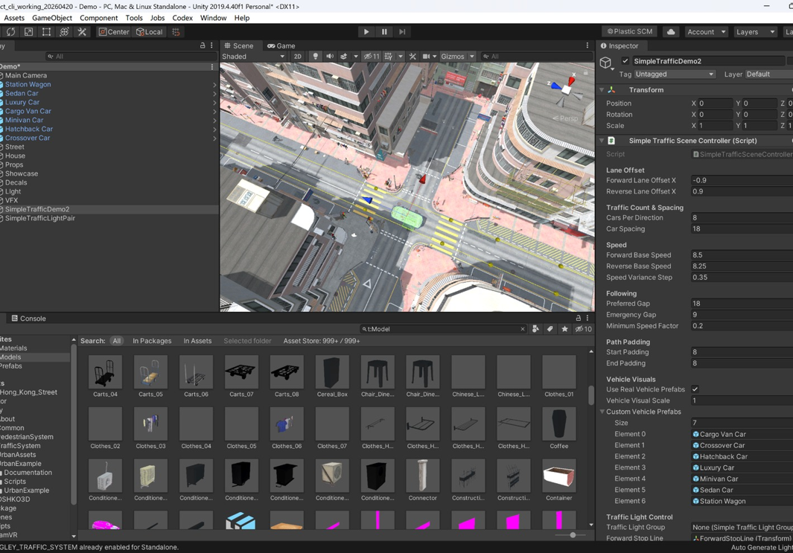
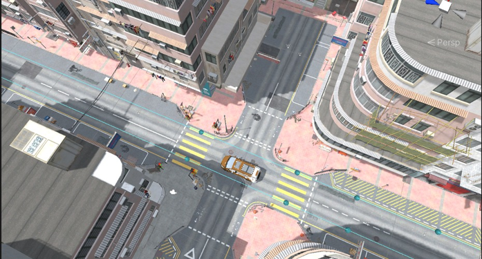
The urban zebra-crossing junction was built in Unity. Vehicle paths, vehicle spawning, and traffic conditions were controlled programmatically.
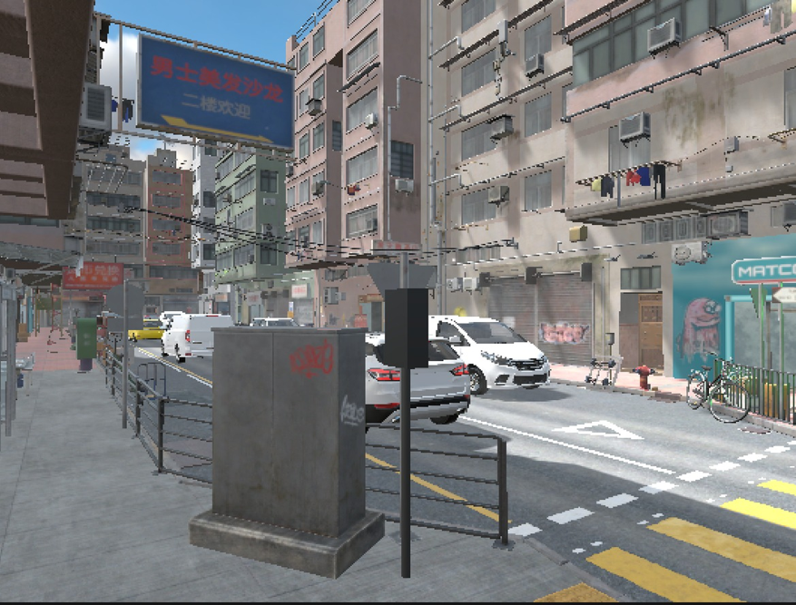
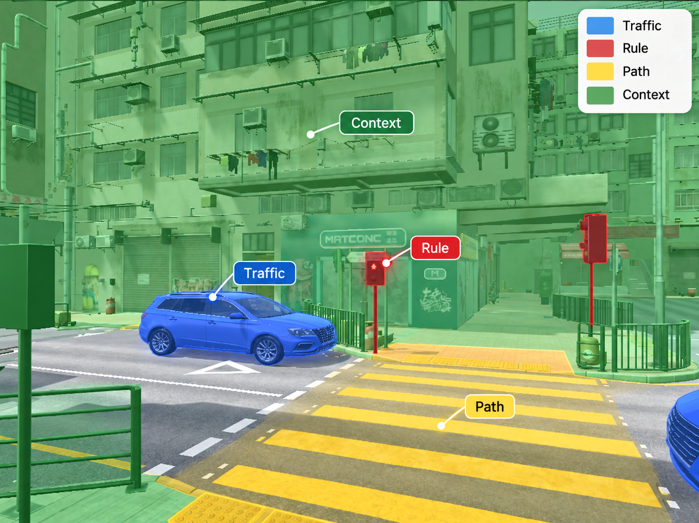
Traffic Scenario → Visual Processing → Crossing Safety
INFORMATION SOURCES · 4 AOI TYPES
Minimum pedestrian–vehicle distance during crossing
AOI = Area of Interest. The diagrams show the experimental structure and measurement concepts; they do not depict recorded gaze trajectories or observed safety distances.
Four complementary measurement streams
Gaze & AOI
Vehicle State
Pedestrian Movement
Crossing Safety Margin
Aligned to crossing initiation (M0), continuous AOI data reveal when visual attention departs from its early baseline and define the window for subsequent analysis.
One recorded trial · 50 ms resolution
Fitted change in Traffic–Context contrast from the early baseline
The contrast begins a sustained departure from the early baseline at −6.25 s. The detected departure lasts to approximately −0.15 s; the analysis window extends to M0.
Attention allocation, key event timing, and visual state transition measures are extracted within this unified window.
Before the first step, visual attention reorganizes through where attention is allocated, when traffic information is first attended to, and how gaze switches between information sources. All three dimensions are associated with crossing safety margins.
Where is visual attention allocated?
More Traffic attention relative to Rule→ Larger safety margin
More crosswalk attention→ Smaller safety margin
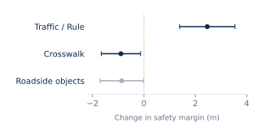
Points: change per 1 SD. Lines: 95% CI.
Largest explanatory gain among the three dimensions.
When is traffic information first attended to?
Longer First Traffic Fixation Delay→ Smaller safety margin
Delay from the analysis window start (−6.25 s) to the first Traffic attention event.
Other event timings did not show clear associations after multiple-comparison correction.
How is visual search organized?
Higher Overall AOI Switching Rate→ Smaller safety margin
More Sustained Traffic Segments→ Larger safety margin
Sustained segments are continuous Traffic monitoring for at least 200 ms.
Greater attention to Traffic relative to Rule
Less attention to the crosswalk
Earlier first attention to Traffic
Less frequent AOI switching
More sustained Traffic monitoring
Traffic / Rule ↑ · Roadside ↓ · Crosswalk ↓ · AOI Switching ↓
Larger crossing safety margins are associated with a more traffic-focused, less dispersed, and less frequently switching visual pattern before action.
If safer crossing is associated with more traffic-focused and less fragmented visual processing, street design should help pedestrians identify vehicle information earlier, reduce unnecessary visual competition, and maintain a stable view of approaching traffic.
Traffic-focused + Less fragmented vision
Traffic / Rule Attention ↑
Support earlier and clearer monitoring of approaching vehicles.
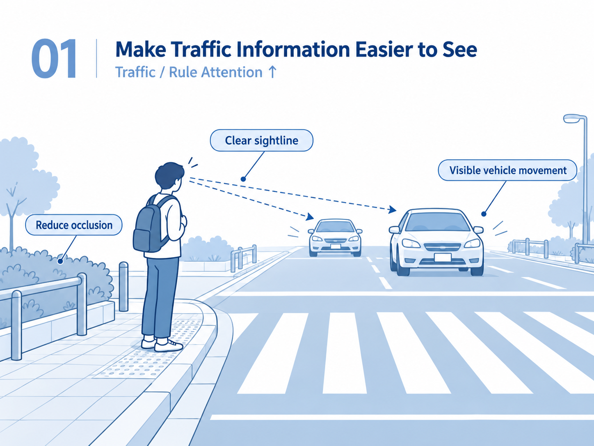
Roadside Attention ↓
Crosswalk Attention ↓
Keep the crossing decision zone visually simple.
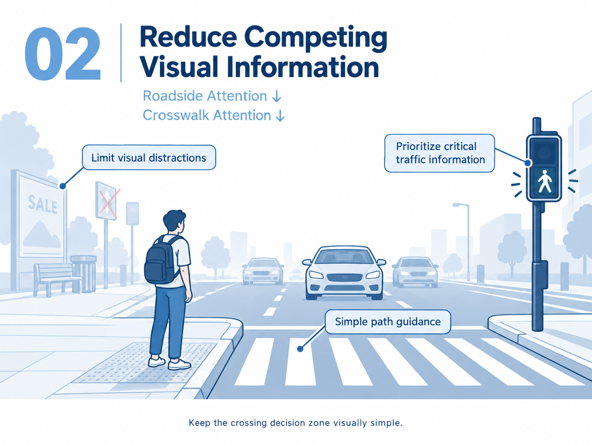
AOI Switching ↓
Reduce unnecessary visual switching between critical information sources.
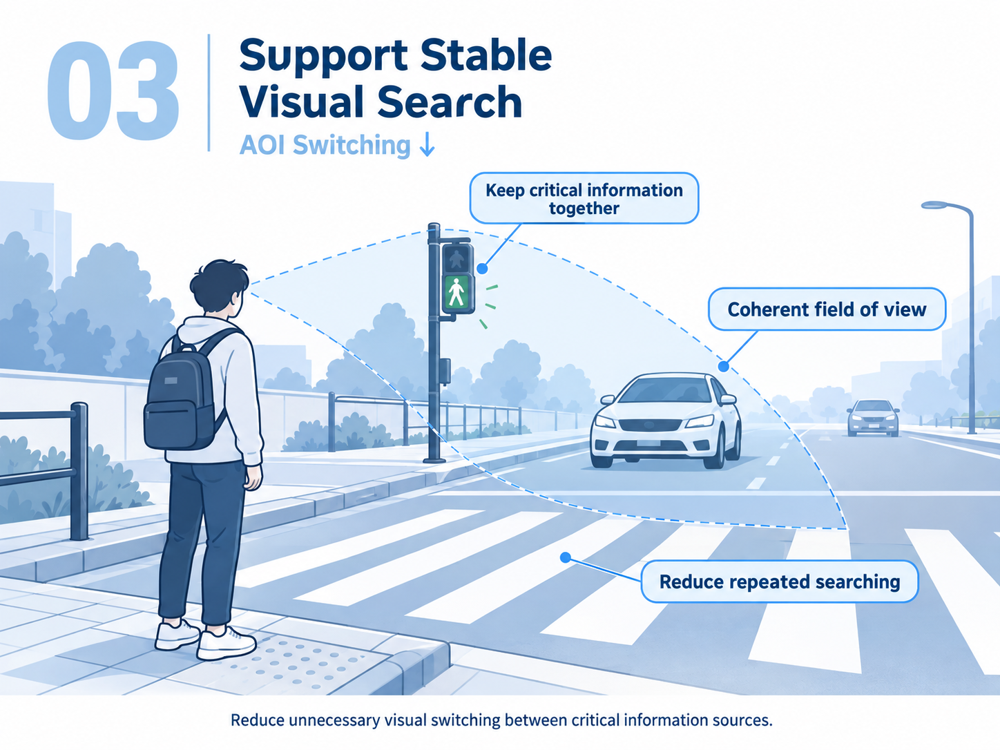